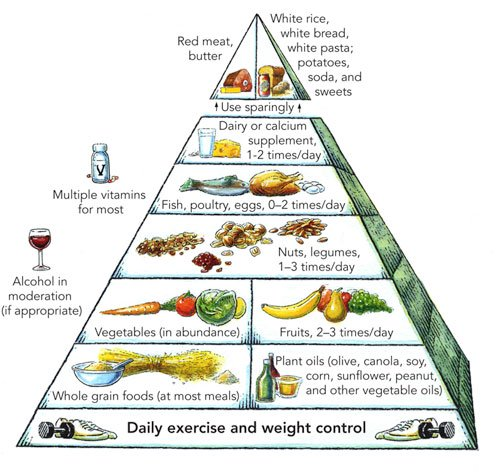

Eating a healthy diet is not about strict limitations, staying unrealistically thin, or depriving yourself of the foods you love. Rather, it’s about feeling great, having more energy, improving your health, and boosting your mood.
The Healthy Eating Pyramid
The fundamentals of healthy eating
A brief video about Healthy eating habits
A healthy diet rich in fruits, vegetables, whole grains and low-fat dairy can help to reduce your risk of heart disease by maintaining blood pressure and cholesterol levels.
High blood pressure and cholesterol can be a symptom of too much salt and saturated fats in your diet.
Click here for more information